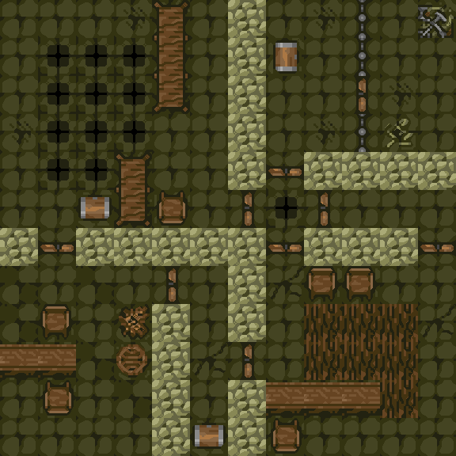

kts.LayoutDungeon – generate the dungeon layout for a new game
kts.LayoutDungeon {
layout = <layout table>,
wall = <tile>,
horiz_door = <tile>,
vert_door = <tile>,
segments = <segments>,
special_segments = <segments>,
entry_type = <string>,
allow_rotate = <boolean>
}
A dungeon layout consists of a grid of up to 3x3 "cells". Each cell is labelled either block, edge or special (the meaning of these terms will be discussed below). Also, each of the four borders of each cell can be considered either "open" or "closed".
Here are some example dungeon layouts:
In the above diagram, dotted lines indicate "open" borders between cells, and solid lines indicate "closed" borders.
(Note that a "Dungeon Type" in the Knights quest selection menu might correspond to more than one possible "dungeon layout" in the sense being discussed here. For example, there are three different "Ring" dungeon layouts, and five different "Long Snakes"; the above diagram shows only one of each.)
Dungeons are made by filling in each cell of the chosen layout with a different, randomly selected "segment". A segment is a pre-designed set of dungeon rooms. For example, this is a segment:

The standard Knights data files include over 200 different segments, allowing for plenty of variety in games, and users can also add more segments by editing the data files if they wish.
Here is an example of the "Long Snake" layout shown above being filled in with some segments, to make a dungeon:
Here, the segment boundaries have been highlighted in red. Observe how each of the seven cells in the "Long Snake" dungeon layout (see previous diagram) have now been filled in with a different, randomly chosen dungeon segment. Observe also the one-square-thick borders that have been added between the segments. In cases where there is a "closed" border (solid line on the dungeon layout diagram), the border squares are completely filled with solid walls, but on the "open" borders (dotted lines on the layout), there is a mix of solid walls and (randomly placed) wooden door tiles. This allows the knights to travel between the different dungeon segments. (In a Long Snake layout, the pattern of open and closed borders is designed such that the knights have to walk a long, winding path to get from one end of the dungeon to the other. In most other layouts, most of the borders are open, allowing the knights to traverse the dungeon more easily.)
We now explain what the different cell types (block, edge and special) mean. In many cases, the cell types don't actually make any difference, and the dungeon generator just fills each cell with a randomly chosen segment, regardless of the cell type. However, there are some circumstances in which the cell types matter, as follows:
edge or special cell, if possible. Only if there are none of those cell types remaining will a block cell be used. edge cells, and each knight will start in a different edge cell. (This is why the "Away from Other" option is limited to a maximum of four players; none of the standard dungeon layouts contains more than four edge cells.) edge cell if possible, or a block cell if no edge cells are available. (Again, this entry point option is limited to four players, this time because none of the standard dungeon segments contains more than four "home" tiles.) An additional rule is that if a special cell is not filled with a "required" dungeon segment then it is removed from the layout entirely. This comes into play for the "Ring" dungeon type (which is the only dungeon type that uses the special cells currently). For example, in the "Ring" dungeon layout shown above, the centre cell is special. If the quest has at least one "required" segment (such as a guarded exit point), then this will appear in the centre of the ring, otherwise the centre of the ring will be left empty.
In Lua, a dungeon layout is represented by a table, as in the following examples:
-- Tiny Dungeon
tiny_layout = {
width = 1,
height = 1,
data = {
{ type="block" }
}
}
-- Basic Dungeon
basic_layout = {
width=2,
height=2,
data={
{ type="edge" }, { type="edge" },
{ type="edge" }, { type="edge" }
}
}
-- Long Snake Dungeon
long_snake_layout = {
width=3,
height=3,
data={
{ type="block" }, { type="edge", exits="w" }, { type="none" },
{ type="block" }, { type="block", exits="we" }, { type="block" },
{ type="none" }, { type="edge", exits="e" }, { type="block"
}
}
-- Ring Dungeon
ring_layout = {
width=3,
height=3,
data={
{type="block" }, {type="block" }, {type="special"},
{type="block", exits="ns"}, {type="block", exits="ns"}, {type="none" },
{type="block" }, {type="block" }, {type="none" }
}
}
The table contains fields width and height giving the size of the layout (in cells) and then a data field containing the cells themselves (in order, left to right then top to bottom). Each cell is itself represented by a table containing a type field, which must be set to one of the strings "block", "edge" or "special" (representing a cell of the corresponding type) or else "none" (representing a cell which is not actually part of the current layout). Each cell may also contain a field exits which is a string containing one or more of the letters "n", "e", "s" and/or "w" (for north, east, south and west) which determines the borders of the cell that are considered "open". The default (if exits is not specified) is for all borders to neighbouring cells to be considered open. Note that exits must be consistent, e.g. if one cell has an exit to the north, then the neighbouring cell just above must have an exit to the south (if this is not the case then an error message will be generated).
Calling the kts.LayoutDungeon function kicks off the dungeon generation process and places the map segments into the dungeon. The players' homes (dungeon entry points) are also assigned at this time.
Before this function is called, the dungeon should be completely empty, and also the kts.DUNGEON_ERROR variable should be nil. kts.WipeDungeon can be called beforehand, if necessary, to make sure that this is the case.
kts.LayoutDungeon takes exactly one parameter, which should be a table containing the following fields:
layout is a dungeon layout table, as described above. wall is a Tile representing a solid wall. This tile will be used to fill in the borders between dungeon segments. horiz_door and vert_door are Tiles representing horizontally and vertically aligned wooden doors. These tiles are placed (at random locations) along any "open" borders in the layout, allowing knights to travel from one segment to another. segments and special_segments are lists of dungeon segments (as returned by a previous kts.LoadSegments call). special_segments represents segments that must be included in the dungeon as part of the current quest, e.g. guarded exit segments or liche tombs etc. (Normally this will be a fairly short list, perhaps containing only one or two segments, or perhaps none at all for a simpler quest.) As described above, these segments will be placed in special or edge map cells if possible, or block cells otherwise. (If there are not enough cells in the layout for all of the special_segments to fit, then dungeon generation fails.) segments contains a list of "normal" segments that are available for the dungeon generator to use. (Normally this will be a large list, potentially containing hundreds of segments.) After all special_segments have been placed, the dungeon generator will fill every remaining block or edge cell (but not special cells) with randomly chosen segments from the segments list. The dungeon generator will take care to ensure that there are enough segments containing "home" tiles, so that all knights have entry points into the dungeon, but other than that, the dungeon generator basically just chooses at random from this list. entry_type is one of the strings "none", "close", "away" or "random" giving the method of selecting dungeon entry points ("homes") for the knights. They have the following meanings: "none" means that knights won't be given homes at all – in this case, kts.SetRespawnType must be used to set the respawn type to "different" or "anywhere" (otherwise knights won't be able to enter the dungeon and the game won't work). "close" means that knight homes will all be placed in the same dungeon segment – an edge segment if possible, or a block otherwise. "away" means that each knight home must be in a different segment. In this case all homes must also be on edge segments. "random" means that knights can be assigned to any available "home" tile in the dungeon at random. The only limit on number of players is the size of the dungeon and the number of homes that it contains. allow_rotate is a boolean indicating whether the dungeon generator is allowed to randomly rotate and/or reflect segments before placing them into the dungeon. This is optional; if it is missing (or nil) then it defaults to true. allow_rotate setting determines whether the segments themselves can be rotated and/or reflected before being placed into the dungeon. If this is enabled, then information from previous calls to kts.SetRotate and kts.SetReflect will be used to determine how to rotate and/or reflect individual dungeon tiles. None.
If the parameters to the function are invalid (for example, an incorrect dungeon layout table is given, or an invalid entry_type string is used), then a Lua error will be raised.
If the parameters are valid, but dungeon generation itself fails, no error is raised; instead, the variable kts.DUNGEON_ERROR is set to a string indicating the reason for the failure. (If dungeon generation is successful, kts.DUNGEON_ERROR will be left as nil.)
A full dungeon generation system will not only need to call kts.LayoutDungeon, but it will also need to call other functions such as kts.GenerateLocksAndTraps, kts.AddItem, kts.AddStuff, kts.AddMonsters and kts.ConnectivityCheck to populate the dungeon with items and monsters, and ensure that all rooms are accessible to players.
Also, calling the dungeon generator multiple times is sometimes necessary, as there might be cases where dungeon generation fails (just due to random chance) but retrying it succeeds. If dungeon generation fails more than, say, 25 times in a row, then it is likely that the current layout is simply not big enough to fit in everything needed for the current quest, and in that case, starting over with a larger dungeon layout is recommended.
This is all taken care of by the standard Knights Lua files; the code can be found in dungeon_setup.lua. (In particular, the function generate_dungeon in that file is the starting point for dungeon generation.)
The standard dungeon layouts ("Tiny", "Basic", "Big", "Huge", "Snake", "Ring" and so on) can be found in dungeon_layouts.lua. Note that the actual dungeon layout table is returned by the function marked func in each case (the rest of the structure in that file is internally used by the Lua code, and is not part of the data that is passed to kts.LayoutDungeon). Also note that for many of the dungeon types, there is not just one dungeon layout, but several, which are selected from at random when a game with that dungeon type is played. For example, there are three possible "Huge" dungeon layouts, one of which is selected at random whenever a quest with a "Huge" dungeon is played.